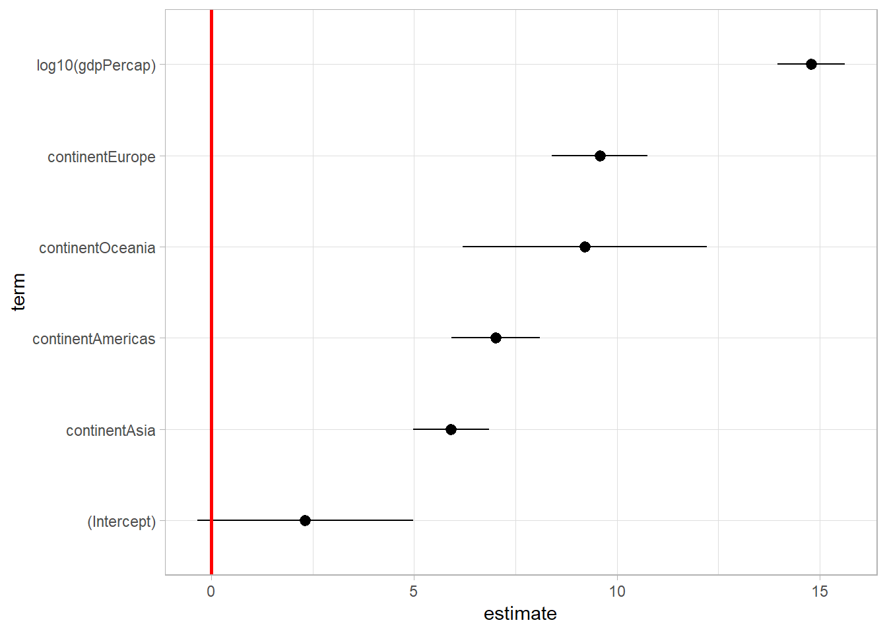

Chapter 3 OLS
OLS regression is the backbone of statistics (though not actually used that often because of the restrictions that come with it). The basic goal of OLS regression is to understand the relationship between one more more independent variables and some dependent variable. OLS regression is said to be BLUE under certain circumastances:
- B: best
- L: linear
- U: unbiased
- E: estimator
Under assumptions that will be discussed later, OLS regression will be unbiased (errors are evenly distributed) and the one with the smallest errors. It is also the best model to use under these assumptions. OLS regression is also very easy to interpret. For all of these reasons (and more), it is one of the first statistical methods taught in graduate methods sections. These do assume, however, that you understand t statistics, standard errors, and the basics of hypothesis testing.
3.1 Intuition
Keeping it simple, a bivariate regression looks for the relationship between two variables (sometimes referrred to as vectors). Visually you can see it in the graph below (gapminder library was already loaded).
gapminder %>%
ggplot(aes(x = gdpPercap, y = lifeExp)) +
geom_point() +
scale_x_log10(labels = scales::comma_format()) +
labs(x = "Logged GDP/capita", y = "Life Expectancy")You can see a general positive trend between the logged GDP per Capita and Life expectancy. To see this as a hypothesis, you would say that “countries with higher GPD per capita have a higher life expectancy” or “as a country gets richer, the life expectancy increases.”
In the code below, the red line would be considered our hypothesis.
gapminder %>%
ggplot(aes(x = gdpPercap, y = lifeExp)) +
geom_point() +
scale_x_log10(labels = scales::comma_format()) +
geom_abline(intercept = -10, slope = 20, color = "red", lty = 2, size = 2) +
labs(x = "Logged GDP/capita", y = "Life Expectancy")3.2 Running your first regression
Our argument about the connection between logged GDP per captia and life expectancy can be shown in three slightly different ways:
- Hypothesis: Countries with higher GPD per capita has a higher life expectancy
- Mathematical: \(LifeExp_i = \alpha + \beta (Logged GDP/Capita_i) + \epsilon_i\)
- R code:
model1 <- lm(lifeExp ~ log10(gdpPercap), data = gapminder)
The generalizable mathematical formula is actually \(Y_i = \alpha + \beta X_i + \epsilon_i\), but I find this to be confusing if introduced before the actual formula. For the R code, the lm stands for linear model. Within the parentheses you need to specify your dependent variable, DV, to the left of the tilde ~ and your independent variable, IV, to the right. Lastly, you need to specify the dataset where the variables are located, data = gapminder (technically you can use the DATASET$VARIABLE notation, but that gets impractical later). Generally, you do not need to worry about the log10(), but prior knowledge says that GDP generally requires a logarithmic transformation.
model1 <- lm(lifeExp ~ log10(gdpPercap), data = gapminder)By calling summary(model1) we are able to see the influence of the logged GDP per capita on life expectancy. The first thing we see is the formula we used to create the model. Next we see some summary statistics about our residuals (distance between our regression line and the observation). Under the coefficients section we see our intercept and log10(gdpPercap). The intercept is the location on the y-axis when our independent variable is equal to 0. In many instances, we have no interest in interpreting the intercept. For instance, our model says that when the logged GDP of a country is 0 (which is undefined because logarithm is only for values greater than 0), the life expectancy for that country is -9, another ridiculous number. Again, this is common.
Our main interest is in our independent variable, the log of GPD per capita. We see that there is a positive relationship between the log of GPD per capita and life expectancy. Additionally, we see that the t statistic is rather large and the variable is significant at all standard social science levels. The last statistic I want to highlight is the \(R^2\) which basically shows us how much of the variation in life expectancy is explained by the log of GDP per capita.
summary(model1)##
## Call:
## lm(formula = lifeExp ~ log10(gdpPercap), data = gapminder)
##
## Residuals:
## Min 1Q Median 3Q Max
## -32.778 -4.204 1.212 4.658 19.285
##
## Coefficients:
## Estimate Std. Error t value Pr(>|t|)
## (Intercept) -9.1009 1.2277 -7.413 1.93e-13 ***
## log10(gdpPercap) 19.3534 0.3425 56.500 < 2e-16 ***
## ---
## Signif. codes: 0 '***' 0.001 '**' 0.01 '*' 0.05 '.' 0.1 ' ' 1
##
## Residual standard error: 7.62 on 1702 degrees of freedom
## Multiple R-squared: 0.6522, Adjusted R-squared: 0.652
## F-statistic: 3192 on 1 and 1702 DF, p-value: < 2.2e-16To get a table more common in articles or presentations, try using the stargazer table from the stargazer package. This table shows the same basic data as the summary with slight stylistic differences. We specified that we wanted the type = "text" because the default is \(\LaTeX\) code. There are a lot of ways to customize a stargazer table, but the basics do most of what we need.
stargazer(model1, type = "text")##
## ===============================================
## Dependent variable:
## ---------------------------
## lifeExp
## -----------------------------------------------
## log10(gdpPercap) 19.353***
## (0.343)
##
## Constant -9.101***
## (1.228)
##
## -----------------------------------------------
## Observations 1,704
## R2 0.652
## Adjusted R2 0.652
## Residual Std. Error 7.620 (df = 1702)
## F Statistic 3,192.273*** (df = 1; 1702)
## ===============================================
## Note: *p<0.1; **p<0.05; ***p<0.01We can see the relationship in the following graph. The red line is the graphical manifistation of our model (pretty close to the original red line).
gapminder %>%
ggplot(aes(x = gdpPercap, y = lifeExp)) +
geom_point() +
scale_x_log10(labels = scales::comma_format()) +
geom_smooth(method = "lm", color = "red") +
labs(x = "Logged GDP/capita", y = "Life Expectancy")3.3 Advancing to Multiple Regression
We see that there is a connection between the wealth of a country (logged GPDPercap) and lifeExp, but could this relationship be a function of the continent where someone resides? In bivariate regression you do not know about potentially confounding variables. Additionally, you may have more than just one hypothesis. Lots of research only specifies one relationship (a bi-variate relationship) when the real world is much more complicated. To get over this hurdle, we have introduce additional variables, thus changing from bivariate to multiple variable regression (sometimes referred to as multi-variate regression). The formula is very similar in R, but there are additional assumptions that need to be made (the next section). Here is the code for running a multiple regression:
model2 <- lm(lifeExp ~ log10(gdpPercap) + continent, data = gapminder)The line of code is almost exactly the same (I actually just copied and pasted this from above), with the only addition is the inclusion of + continent. That is it! Nothing too crazy to move beyond bivariate. But now you can make claims that you might have heard before, such as: “all else equal”, “holding everything constant”. But before we make claims, let’s check out the results.
summary(model2)##
## Call:
## lm(formula = lifeExp ~ log10(gdpPercap) + continent, data = gapminder)
##
## Residuals:
## Min 1Q Median 3Q Max
## -27.1163 -3.4739 0.4336 4.3519 18.5632
##
## Coefficients:
## Estimate Std. Error t value Pr(>|t|)
## (Intercept) 2.3170 1.3594 1.704 0.0885 .
## log10(gdpPercap) 14.7871 0.4225 35.003 < 2e-16 ***
## continentAmericas 7.0147 0.5544 12.652 < 2e-16 ***
## continentAsia 5.9117 0.4768 12.400 < 2e-16 ***
## continentEurope 9.5771 0.6041 15.855 < 2e-16 ***
## continentOceania 9.2135 1.5359 5.999 2.42e-09 ***
## ---
## Signif. codes: 0 '***' 0.001 '**' 0.01 '*' 0.05 '.' 0.1 ' ' 1
##
## Residual standard error: 7.038 on 1698 degrees of freedom
## Multiple R-squared: 0.704, Adjusted R-squared: 0.7031
## F-statistic: 807.6 on 5 and 1698 DF, p-value: < 2.2e-16We see from the results that the log10(gdpPercap) is still significant and positive, though the slope is a little smaller. We also see the output for four continents: Americas, Asia, Europe, Oceania. It appears that the gapminder dataset combines North and South America (something I wouldn’t recommend if this were my own data). Whenever we have a categorical variable like this, one category must be left out as the “holdout” or “baseline” category. In this instance, Africa is the holdout category (you can do some magic if you want a different baseline category, but it is generally not that important). All statements that are based on the findings for each continent has to be done in relationship to Africa.
How do you interpret the model? Let’s start with GDP/capita. The interpretation is almost completely the same, but with a slight addition. Our model predicts that for a log10 unit increase in GDP/capita (going from 1-dollar per capita to 10-dollars per capita), we expect the average life expectancy for a country to increase by 14.7 years, all else equal. This means that while considering the continent of that country (or yet another way: regardless of the continent), there is still a positive relationship between GDP/capita and life expectancy.
Interpreting the other variables is pretty simple. Given that we are comparing to Africa, we would say that countries in the Americas are predicted to have a 7 year higher average life expectancy, regardless of the GDP per capita (you could again say all else equal). Countries in Asia also have a higher life expectancy compared to Africa.
Now I would only make these statements if there is a statistically significant relationship (generally determined based off of a p-value). If we have made the determination that a variable is not statistically significant, than we are unable to confidently say the direction of the effect.
3.4 Checking Assumptions
Now we need to check for the different assumptions that go along with OLS regression. For those who want a quick introduction, this website seemed to have a good introduction.
3.4.1 Normality
The first question is whether we have a normal distribution. The quantile-quantile (Q-Q) plot tests the assumption that our data really does come from a theoretically normal distribution (the code below requires the car package). You want the observations to fall along the blue line. In general, you will have some points off of the line. This is not a hard and fast rule. This assumption should be checked carefully for models that are small n (around 50). For this model, we are following fairly close to the line, and do not appear to be wildly violating the normality assumption.
qqPlot(model2)## [1] 853 854a less informative, but easier to understand option is to do a histogram of residuals.
Another more check on the residuals using a histogram. I am looking here to just see that our residuals are, overall, primarily around 0. We do see a little tail here to the left, but nothing that is too crazy.
library(modelr)
gapminder_results <- gapminder %>%
add_residuals(model2)
ggplot(gapminder_results, aes(resid)) +
geom_histogram() +
geom_vline(xintercept = 0, color = "black", size = 2)Here we are seeing that our results appear to be somewhat normally distributed, but it does have a longer tail on the left.
Another numeric technique to determine if our errors are normally distributed is the Jarque Bera Normality test (using the moments) package. From here we reject the null hypothesis that the errors are normally distributed. While not a true Gauss-Markov assumptions, we may want to consider using a generalized linear model which allows us to fit a different distribution.
library(moments)## Warning: package 'moments' was built under R version 3.5.2jarque.test(gapminder_results$resid)##
## Jarque-Bera Normality Test
##
## data: gapminder_results$resid
## JB = 98.4, p-value < 2.2e-16
## alternative hypothesis: greater3.4.2 Heteroskedasticity
One of the assumptions of OLS is that you have constant variance in the residuals (homoskedasticity). Residuals are best described as the distance between your model and your actual data (they are also known as the error term or “left-overs”). You would expect that the distance between your data and the predicted outcome to be the same across all observations (across all continents and GDP/capita). Otherwise you will have a biased model.
There are two different ways to look for Heteroskedasticity. First is the graphical look. Calling the plot() function with the model included will produce 4 graphs. You want to look primarily at the fist chart. If you do violate the assumption of homoskedasticity (hence, you have heteroskedasticity) then you would see equal distribution of point around 0 for across the x-axis.
I would note that the other 3 charts are also checks on your model. The second chart is another Q-Q plot. Feel free to dive deeper into these charts, but I am going to move on.
plot(model2)If you want a more formal test of heteroskedasticity, you use the car package’s ncvTest which is the Breush-Pagan test or Non-constant error variance test. For this one, you are looking at the p-value and making a normal hypothesis test with the null hypothesis being that there is homoskedasticity.
ncvTest(model2)## Non-constant Variance Score Test
## Variance formula: ~ fitted.values
## Chisquare = 49.29342, Df = 1, p = 2.204e-12Here we definitely show significance and need to use some sort of fix for this problem. With heteroskedasticity, your results will be biased and inefficient. The most common way to fix this problem is to use Huber-White robust standard erros (also known as sandwich standard errors). This doesn’t actually fix the problem of inefficiency, but does help wih the bias.
Using the lmtest and sandwich packages, we can obtain those robust standard errors. You will see that getting the coefficients are the same with both the lines is the same, but the standard errors, t-stats and p-values are different. If you wanted a different method, you could use Weighted Least Squares regression (WLS), but that is for another text. The WLS will be a better estimate than simply using robust standard errors, but that is only true if we have properly modeled the error variance.
library(sandwich)
library(lmtest)
summary(model2)##
## Call:
## lm(formula = lifeExp ~ log10(gdpPercap) + continent, data = gapminder)
##
## Residuals:
## Min 1Q Median 3Q Max
## -27.1163 -3.4739 0.4336 4.3519 18.5632
##
## Coefficients:
## Estimate Std. Error t value Pr(>|t|)
## (Intercept) 2.3170 1.3594 1.704 0.0885 .
## log10(gdpPercap) 14.7871 0.4225 35.003 < 2e-16 ***
## continentAmericas 7.0147 0.5544 12.652 < 2e-16 ***
## continentAsia 5.9117 0.4768 12.400 < 2e-16 ***
## continentEurope 9.5771 0.6041 15.855 < 2e-16 ***
## continentOceania 9.2135 1.5359 5.999 2.42e-09 ***
## ---
## Signif. codes: 0 '***' 0.001 '**' 0.01 '*' 0.05 '.' 0.1 ' ' 1
##
## Residual standard error: 7.038 on 1698 degrees of freedom
## Multiple R-squared: 0.704, Adjusted R-squared: 0.7031
## F-statistic: 807.6 on 5 and 1698 DF, p-value: < 2.2e-16coeftest(model2, vcov = vcovHC)##
## t test of coefficients:
##
## Estimate Std. Error t value Pr(>|t|)
## (Intercept) 2.31701 1.64432 1.4091 0.159
## log10(gdpPercap) 14.78713 0.53360 27.7120 <2e-16 ***
## continentAmericas 7.01468 0.65568 10.6983 <2e-16 ***
## continentAsia 5.91171 0.58402 10.1225 <2e-16 ***
## continentEurope 9.57713 0.65965 14.5185 <2e-16 ***
## continentOceania 9.21348 0.81266 11.3374 <2e-16 ***
## ---
## Signif. codes: 0 '***' 0.001 '**' 0.01 '*' 0.05 '.' 0.1 ' ' 1You can use these results to present in your results.
3.4.3 Multicollinearity
In multiple regression we assume that there is “no perfect multicollinearity”. If you are at this point, you don’t have this problem. R would not compute the model correctly if you had multicollienarity problems. To have a perfectly multicollinearity would happen if we included GDP per capita in dollars and Pesos. These variables would have a correlation of 1 because it is showing the exact same data. While we do not have to worry about perfect multicollinearity, we do want to see if there is high multicollinearity in our model. If we do, we basically have a redundant predictor and our model could be unstable when introduced to slight changes in the data.
Using the car package, we want to check to see if we have a problem with multicollinearity by using the variance inflation factor or VIF. For each of our covariates we will get a VIF score. The minimum value is 1 and you should only start poking around if you have a score over 5. Though, as a rule of thumb, whenever your VIF exceeds 10, we can start to believe that our model is being shaped by the multicollinearity. To give you an idea, a VIF of 10 means that 90% of hte variance of one predictor can be explained by the other predictors. Unlike other test statistics though, there is no hard and fast number. You really have to take this in context of the findings.
vif(model2)## GVIF Df GVIF^(1/(2*Df))
## log10(gdpPercap) 1.782678 1 1.33517
## continent 1.782678 4 1.07494In our case, the VIF scores for each variable fit in the normal range. No problems here, moving on.
3.4.4 Outliers and leverage
If only a few observations are driving our results, then we may not be able to trust our model. There are three general types of problems (note, a lot of this discussion was adapted based off of Political Analysis Using R by James E. Monogon III):
- Outliers: observations with exceedingly large residuals
- Leverage points: takes a value of a predictor that is disproportionately distant from other values
- Influence points: outliers with a lot of leverage
Influence points are particularly problemsome because they can mess up our model the most.
By creating scatterplots, we can start to gain an idea of different problems. “If an observation stands out on the predictor’s scale then it has leverage. If it stands out on the residual scale then it is an outlier. If it stands out on both dimensions, then it is an influence point.” Using the influenceIndexPlot from the car package, we can see the different indicators that we are having an issue. For instance, a value of 1 for Cook’s distance would indicatre the presence of influential data points. Studentized residuals detect outliers, and hat values detect leverage points. We can see here that there are a few points that seem problematic, but it is up to the researcher to determine how to handle the data (you can delete them but you open yourself up to bias).
influenceIndexPlot(model2, vars = c("Cook", "Studentized", "hat"), id.n = 5)## Warning in plot.window(...): "id.n" is not a graphical parameter## Warning in plot.xy(xy, type, ...): "id.n" is not a graphical parameter## Warning in axis(side = side, at = at, labels = labels, ...): "id.n" is not
## a graphical parameter
## Warning in axis(side = side, at = at, labels = labels, ...): "id.n" is not
## a graphical parameter## Warning in box(...): "id.n" is not a graphical parameter## Warning in title(...): "id.n" is not a graphical parameter## Warning in plot.xy(xy.coords(x, y), type = type, ...): "id.n" is not a
## graphical parameter
## Warning in plot.xy(xy.coords(x, y), type = type, ...): "id.n" is not a
## graphical parameter## Warning in plot.window(...): "id.n" is not a graphical parameter## Warning in plot.xy(xy, type, ...): "id.n" is not a graphical parameter## Warning in axis(side = side, at = at, labels = labels, ...): "id.n" is not
## a graphical parameter
## Warning in axis(side = side, at = at, labels = labels, ...): "id.n" is not
## a graphical parameter## Warning in box(...): "id.n" is not a graphical parameter## Warning in title(...): "id.n" is not a graphical parameter## Warning in plot.xy(xy.coords(x, y), type = type, ...): "id.n" is not a
## graphical parameter
## Warning in plot.xy(xy.coords(x, y), type = type, ...): "id.n" is not a
## graphical parameter## Warning in plot.window(...): "id.n" is not a graphical parameter## Warning in plot.xy(xy, type, ...): "id.n" is not a graphical parameter## Warning in axis(side = side, at = at, labels = labels, ...): "id.n" is not
## a graphical parameter
## Warning in axis(side = side, at = at, labels = labels, ...): "id.n" is not
## a graphical parameter## Warning in box(...): "id.n" is not a graphical parameter## Warning in title(...): "id.n" is not a graphical parameter## Warning in plot.xy(xy.coords(x, y), type = type, ...): "id.n" is not a
## graphical parameter
## Warning in plot.xy(xy.coords(x, y), type = type, ...): "id.n" is not a
## graphical parameter3.4.5 Autocorrelation
NOTE: I am skipping this assumption because it is primarily concerning times series, but I am including a small discussion and code for discussing autocorrelation.
Another assumption of OLS regression is that our errors are not correlated. This is grouped into the “independence” assumption of “iid”. Autocorrelation is less of an issue with cross-sectional studies and more with times series. For instance, if you are looking at the GDP of a country over time, you would expect that the best predictor of GDP or the U.S. is the GDP of the U.S. the previous year. This means that there is autocorrelation and we are violating the independence assumption..
To test for this assumption, we can use the Durbin Watson Test. You will get a D-W Statistic which will range from 0 to 4, with a score of 2 showing no autocorrelation. You will see a p-value that tests the null hypothesis that there is no correlation among the residual (meaning the residuals are independent).
durbinWatsonTest(model2)## lag Autocorrelation D-W Statistic p-value
## 1 0.7599568 0.4742002 0
## Alternative hypothesis: rho != 0dwtest(model2)##
## Durbin-Watson test
##
## data: model2
## DW = 0.4742, p-value < 2.2e-16
## alternative hypothesis: true autocorrelation is greater than 0NEEDT TO DO SOMETHING ABOUT THE AUTOCORRELATION (PROBABLY AN AR(1))
At this point, I am satisfied that we are not seriously violating any assumption. Now I am at a point where I okay with moving onto predictions. While predictions are the fun part of a model, it is not advised until you do the hard work of checking assumptions. If you do this out of order, you risk giving predictions based off of a bad model. I particularly like the quote: “all models are wrong but some are useful.” - George E.P. Box
3.4.6 Residual Analysis
Beyond the formal tests, it is also good to see how your model does with residuals against your different independent variables. The first code creates a new data frame (using the school_1 data) and then adds the residual for each observation. What follows is a series of plots to see how the residuals are distributed. Use this to see if your residuals are showing a pattern, or seem to be roughly random (or normally distributed).
The first bit of code creates a new dataset, school_1_graduation using school_1 then uses the modelr package to add_residuals passing in our graduation_gpa_model.
ggplot(gapminder_results, aes(resid)) +
geom_density()ggplot(gapminder_results, aes(x = log10(gdpPercap), y = resid)) +
geom_point()
gapminder_results %>%
group_by(continent) %>%
mutate(squared_resid = resid^2) %>%
summarise(average_squared_resid = mean(squared_resid)) %>%
ggplot(aes(x = continent, y = average_squared_resid)) +
geom_col() +
labs(y = "Average Squared Residual")## Warning: package 'bindrcpp' was built under R version 3.5.23.5 Displaying Results
Now that you have done the analyses, you know if you need to make any changes before you start to display the results (it is not worth making predictions if we aren’t sure if the model is worth anything).
3.5.1 Tables
One of the simplest methods to get a table is to use the stargazer command which comes from the stargazer package. The commands for this are pretty simple, you can simply call stargazer(model2, type = "text") to get something that you can read in R.
stargazer(model2, type = "text")##
## ===============================================
## Dependent variable:
## ---------------------------
## lifeExp
## -----------------------------------------------
## log10(gdpPercap) 14.787***
## (0.422)
##
## continentAmericas 7.015***
## (0.554)
##
## continentAsia 5.912***
## (0.477)
##
## continentEurope 9.577***
## (0.604)
##
## continentOceania 9.213***
## (1.536)
##
## Constant 2.317*
## (1.359)
##
## -----------------------------------------------
## Observations 1,704
## R2 0.704
## Adjusted R2 0.703
## Residual Std. Error 7.038 (df = 1698)
## F Statistic 807.634*** (df = 5; 1698)
## ===============================================
## Note: *p<0.1; **p<0.05; ***p<0.01If you do not specify the type, the command will print out the \(\LaTeX\) code to make the same table, which is very hard for a human to read the print out.
There are a number of ways to customize the table to include even multiple models (great when you have slight variations). You can even show different output.
stargazer(model1, model2, type = "text", report = ('vc*p'))##
## =========================================================================
## Dependent variable:
## -----------------------------------------------------
## lifeExp
## (1) (2)
## -------------------------------------------------------------------------
## log10(gdpPercap) 19.353*** 14.787***
## p = 0.000 p = 0.000
##
## continentAmericas 7.015***
## p = 0.000
##
## continentAsia 5.912***
## p = 0.000
##
## continentEurope 9.577***
## p = 0.000
##
## continentOceania 9.213***
## p = 0.000
##
## Constant -9.101*** 2.317*
## p = 0.000 p = 0.089
##
## -------------------------------------------------------------------------
## Observations 1,704 1,704
## R2 0.652 0.704
## Adjusted R2 0.652 0.703
## Residual Std. Error 7.620 (df = 1702) 7.038 (df = 1698)
## F Statistic 3,192.273*** (df = 1; 1702) 807.634*** (df = 5; 1698)
## =========================================================================
## Note: *p<0.1; **p<0.05; ***p<0.01In the code above, I told stargazer to include both of the models we created earlier. In addition I used the report option to get different outputs:
- c: Coefficient
- V: Variable name
- *: significance stars
- p: p-values
These are the four basic things I like to include, but there are many different options.
As mentioned, this is not quite production ready. I would recommend actually having stargazer create a new word document usin the out option and then specifying a file path/name. Also, having the table type be html makes this a lot easier to manipulate.
# stargazer(model1, model2, type = "html", report = ('cv*p'), out = "example table.doc")All of this being said, I would actually not use the stargazer table for model2 because we know we suffer from heteroskedasticity. Instead I would call the coeftest(model2, vcov = vcovHC) again and hand create a table from that.
3.5.2 Coefplots
Coefficient Plots, also referred to as coefplots, are a great way to show visually what a standard table reports. Here we are using the broom package’s tidy() function to get a tidy data frame of our output. The tidy() function will return one row for every term (variable including the intercept) and a column for the term, estimate (coefficient), standard error, test statistic, and pvalue.
tidy(model2)## # A tibble: 6 x 5
## term estimate std.error statistic p.value
## <chr> <dbl> <dbl> <dbl> <dbl>
## 1 (Intercept) 2.32 1.36 1.70 8.85e- 2
## 2 log10(gdpPercap) 14.8 0.422 35.0 1.50e-202
## 3 continentAmericas 7.01 0.554 12.7 3.99e- 35
## 4 continentAsia 5.91 0.477 12.4 7.30e- 34
## 5 continentEurope 9.58 0.604 15.9 6.70e- 53
## 6 continentOceania 9.21 1.54 6.00 2.42e- 9The nicest thing about the tidy() function is that it allows you to use the tidyverse framework. In the code below I am creating a 95% confidence interval using the mutate command. First I am getting the low end of the confidence interval by subtracting the 1.96 * std.error from the coefficient estimate. The I repeat, but add to create the high end of estimate. Lastly, I am reordering the variable term knowing that later this will make the graph look nicer. Now I have everything I need to create a coefplot!
tidy(model2) %>%
mutate(low = estimate - (1.96 * std.error),
high = estimate + (1.96 * std.error),
term = fct_reorder(term, estimate))## # A tibble: 6 x 7
## term estimate std.error statistic p.value low high
## <fct> <dbl> <dbl> <dbl> <dbl> <dbl> <dbl>
## 1 (Intercept) 2.32 1.36 1.70 8.85e- 2 -0.347 4.98
## 2 log10(gdpPercap) 14.8 0.422 35.0 1.50e-202 14.0 15.6
## 3 continentAmericas 7.01 0.554 12.7 3.99e- 35 5.93 8.10
## 4 continentAsia 5.91 0.477 12.4 7.30e- 34 4.98 6.85
## 5 continentEurope 9.58 0.604 15.9 6.70e- 53 8.39 10.8
## 6 continentOceania 9.21 1.54 6.00 2.42e- 9 6.20 12.2When graphing I have decided to make a geom_point with the x axis being the term, and the y to be location of the estimate. The next line allows us to get an idea of our 95% confidence interval using geom_pointrange(). This allows us to use our new variables low and high to create a line line. Then we add the geom_hline with a y-intercept of 0 to help the viewer determine if the variable is significant at a 95% confidence level. If the estimate or the confidence band (created by geom_pointrange) crosses the red line, then we cannot reject the null hypothesis. Lastly, I do a coord_flip() to make it easier to read the graph (will flip our axes so that the x now looks like the y and the y looks like the x)
tidy(model2) %>%
mutate(low = estimate - (1.96 * std.error),
high = estimate + (1.96 * std.error),
term = fct_reorder(term, estimate)) %>%
ggplot(aes(x = term, y = estimate)) +
geom_point() +
geom_pointrange(aes(ymin = low, ymax = high)) +
geom_hline(yintercept = 0, color = "red", size = 1) +
coord_flip()
There are things I would change, such as the labels for the axes and the terms, but was made to show you how to do the basics. You should be able to google these small cosmetic changes.
3.5.3 Graphing predictions
One of the most important aspects running tests is to show your results in a clean format. While tables and text are possible, graphs are almost always preferred. Here we will show three different graphs for predictions.
The first graph shows the predictions based off of simulated data that varies gdpPercap. This is easily accomplished with the modelr package. In the code below, we first call the dataset. Then we call data_grid which gets requires one argument: the variable(s) you would like to have vary. If you specify a .model argument, it will fill all covariates at their typical value (mean or mode) of the data used in the model. If you run the first two lines, it will show two columns. The first is gdpPercap which has different values ranging from the minimum and maximum from the dataset used. The second column is our covariate (in this model we had two variables so there are only two columns here). The third line add_prediction(model2), tells R to take this new dataset and make predictions based off the results of model2. This command creates a third column called pred (predictions).
Once you have this data, it becomes a simple ggplot() problem. Here I have used geom_line() to create a line graph. Because we used a logarithmic transformation, I have added the scale_x_log10(labels = comma_format()). This puts the x-axis on a logarithmic scale. The comma_format() is only used to make the graph easier to understand.
gapminder %>%
data_grid(gdpPercap, .model = model2) %>%
add_predictions(model2) %>%
ggplot(aes(x = gdpPercap, y = pred)) +
geom_line() +
scale_x_log10(labels = comma_format()) The graph below shows similar results, but I added one layer of complexity. Here I told data_grid to vary not only gdpPercap but also continent. Now instead of 1704 rows we have 8520 (for those paying attention that is 1704 multiplied by the number of continents). The only other change is that I added the color = contintent argument to create a line for each continent. You will see that each line is parallel to each other. The difference between each line is the coefficient for each continent.
gapminder %>%
data_grid(gdpPercap, continent, .model = model2) %>%
add_predictions(model2) %>%
ggplot(aes(x = gdpPercap, y = pred, color = continent)) +
geom_line() +
scale_x_log10(labels = scales::comma_format()) The last graph to show is a bar chart (though I used geom_col()) of the different predictions for each continent. This uses almost the same exact code to create the data_grid. To make the graph look a little nicer, I decided to reorder the continents by prediction continent = fct_reorder(continent, pred). This isn’t necessary, but a nice addition.
gapminder %>%
data_grid(continent, .model = model2) %>%
add_predictions(model2) %>%
mutate(continent = fct_reorder(continent, pred)) %>%
ggplot(aes(x = continent, y = pred)) +
geom_col()?add_predictions## starting httpd help server ... done